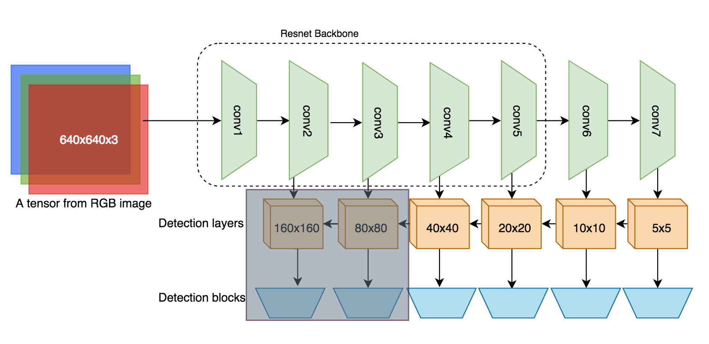

In this post, I'm going to present how to reuse the trained model on few detection layers.
As we built and trained the FaceNet (using ResNet101 via Base101) with 6 detection layers.
- The first detection layers will detect the faces of approximately (16x16) in 160x160 cells if the input image size is 640x640 (the feature maps size of this detection layer).
- The second detection layers will detect the faces of approximately (32x32) in 80x80 cells if the input image size is 640x640 (the feature maps size of this detection layer).
In practical use, we rarely need to detect the very tiny faces like this. The purpose of two layers is mainly for achieving high accuracy in WiderFace dataset.
Removing the first detection layer or both layers will reduces a lot of time on making detections via forward pass.
There are 3 main things we need to care when removing these layers.
1. Build the truncated models.
A. Removing these detection layers is simply "don't create DetectionBlock for these layers".
When we define FaceNet model, I tried to make it flexible as possible. As we see in the code,
the number of detection blocks depends on the length of the list num_anchors_per_cells.
* num_anchors_per_cells: list of values representing for the number of anchors per cell in each
detection layer (because we have only square anchor - then the values are 1 for all layers).
class FaceNet():
def __init__(self,
num_classes=2,
num_anchors_per_cells=[1, 1, 1, 1, 1, 1],
base=Base101(pretrained=True)):
# ...
self.num_det_layers = len(num_anchors_per_cells)
for i, num_anchor_per_cell in enumerate(self.num_anchors_per_cells):
self.det_blocks += [DetectionBlock(num_anchor_per_cell, self.num_classes)]
If we remove the first detection layer, simply set num_anchors_per_cells=[1, 1, 1, 1, 1]. Then,
there will be 5 DetectionBlock created.
B. We also need to determine the the input detection layer for each DetectionBlock we created.
The feature maps of 6 detection layers we extract from the self.extractor are [conv2, conv3,
conv4, conv5, conv6, conv7].
If we remove the first detection layer, so we need to pass [conv3, conv4, conv5, conv6, conv7]
to the self.det_blocks.
class FaceNet():
def __init__(self):
...
def forward(self, input):
# Get [conv2, conv3, conv4, conv5, conv6, conv7]
ftmaps = self.extractor(input)
# If we remove the first detection layers, we only need to keep
# [conv3, conv4, conv5, conv6, conv7].
start_idx = (len(ftmaps) - self.num_det_layers)
ftmaps = ftmaps[start_idx : ]
# Then, make the detections
for i in range(self.num_det_layers):
res_dets = self.det_blocks[i](ftmaps[i])
2. Get the weights for these truncated models.
We trained the FaceNet (ResNet101 backbone) model with 6 detection layers and save the weights to
the pickle file. Essentially, the pickle file is just a dictionary (OrderedDict) with key :
value is weight_name : weight_value.
The DetectionBlock contains several conv layers, and the weights of conv layers
would start with the prefix which is the name of its DetectionBlock.
We define DetectionBlock in a list with the attribute self.det_blocks:
class FaceNet():
def __init__(self, ...):
...
for i, num_anchor_per_cell in enumerate(self.num_anchors_per_cells):
self.det_blocks += [DetectionBlock(num_anchor_per_cell, self.num_classes)]
Therefore, the weights of all conv layers in the first DetectionBlock would start with the
prefix: det_blocks.0.. The second DetectionBlock starts with det_blocks.1, and so on.
If we remove the first detection layer, we need to:
* Remove the first DetectionBlock from the weight dictionary. Remove all keys and weights which
start with det_blocks.0.
- Change the key name of the other detection blocks.
'det_blocks.0' - remove
'det_blocks.1' -> change to 'det_blocks.0'
'det_blocks.2' -> change to 'det_blocks.1'
'det_blocks.3' -> change to 'det_blocks.2'
'det_blocks.4' -> change to 'det_blocks.3'
'det_blocks.5' -> change to 'det_blocks.4'
If we remove the first and second layers:
'det_blocks.0' - remove
'det_blocks.1' - remove
'det_blocks.2' -> change to 'det_blocks.0'
'det_blocks.3' -> change to 'det_blocks.1'
'det_blocks.4' -> change to 'det_blocks.2'
'det_blocks.5' -> change to 'det_blocks.3'
Finally, we save the weights dictionary to a new file.
The implementation of the code is located in '/utils/model_utils.py'.
3. Make detections with the truncated models.
The example below is for the truncated model of 5 detection layers (remove the first detection layer).
# 1. Build model
net = FaceNet(num_classes=2,
num_anchors_per_cells=[1, 1, 1, 1, 1], # 5
base=torch_object_detection.models.Base101(pretrained=False)
)
# 2. Load truncated weights
net.load_state_dict(torch.load(truncated_model_path))
# 3. Make detections and suppose we have an image -> convert to a tensor
loc_dets, cls_dets, fm_sizes = net(tensor, fm_sizes_return=True)
Now, after doing forward pass to the model, we need to decode
loc_dets, cls_dets, fm_sizes into the boxes, labels, and confidence scores. It means that we
need to define the BoxCoder for it.
If we remove the first layers, we need to redefine the values of anchor_sizes, aspect_ratios,
and fm_sizes. The example below is for the input image of (640x640)
# Load and image and preprocess it to tensor
image = torch_object_detection.utils.load_image('./images/2.jpg', height=640, width=640)
tensor = torch_object_detection.utils.preprocess_image(image)
# Define some argument values for BoxCoder
img_size = (640, 640)
anchor_sizes = [32, 64, 128, 256, 512]
aspect_ratios = [[1,],[1,], [1,], [1,], [1,]]
fm_sizes = [[80, 80],
[40, 40],
[20, 20],
[10, 10],
[5, 5]]
box_coder = torch_object_detection.utils.BoxCoder(img_size=img_size,
anchor_sizes=anchor_sizes,
aspect_ratios=aspect_ratios,
fm_sizes=fm_sizes)
The fm_sizes can be changed if we change the input image size. For example, if we get the image
of (320, 480) but we don't know what is the values of fm_sizes, so there is 1 way to do it:
# Load and image and preprocess it to tensor
image = torch_object_detection.utils.load_image('./images/2.jpg', height=640, width=640)
tensor = torch_object_detection.utils.preprocess_image(image)
# Do forward pass, we get the fm_sizes if `fm_sizes_return=True`
loc_dets, cls_dets, fm_sizes = net(tensor, fm_sizes_return=True)
In detect method, I already implement it for you, but you must define anchor_sizes,
aspect_ratio for it while fm_sizes=None.
# Load and image and preprocess it to tensor
image = torch_object_detection.utils.load_image('./images/2.jpg', height=480, width=320)
tensor = torch_object_detection.utils.preprocess_image(image)
# Define some argument values for BoxCoder
img_size = (image.size[1], image.size[0])
anchor_sizes = [32, 64, 128, 256, 512]
aspect_ratios = [[1,],[1,], [1,], [1,], [1,]]
box_coder = torch_object_detection.utils.BoxCoder(img_size=img_size,
anchor_sizes=anchor_sizes,
aspect_ratios=aspect_ratios,
fm_sizes=None)
4. Complete exmple:
# Build model
net = FaceNet(num_classes=2,
num_anchors_per_cells=[1, 1, 1, 1, 1], # 5
base=torch_object_detection.models.Base101(pretrained=False)
)
# Load truncated weights
net.load_state_dict(torch.load(truncated_model_path))
# Load and image and preprocess it to tensor
image = torch_object_detection.utils.load_image('./images/2.jpg', height=480, width=320)
tensor = torch_object_detection.utils.preprocess_image(image)
# Define some argument values for BoxCoder
img_size = (image.size[1], image.size[0])
anchor_sizes = [32, 64, 128, 256, 512]
aspect_ratios = [[1,],[1,], [1,], [1,], [1,]]
box_coder = torch_object_detection.utils.BoxCoder(img_size=img_size,
anchor_sizes=anchor_sizes,
aspect_ratios=aspect_ratios,
fm_sizes=None)
# Make detection with `detect` method
det_boxes, det_scores, det_labels = torch_object_detection.utils.detect(tensor, net,
box_coder=box_coder,
device='cpu',
score_thresh=0.3,
nms_thresh=0.3)
# Draw the detections
drawn_image = torch_object_detection.utils.draw_detections(image, det_boxes, det_scores, det_labels)
The scripts of examples can be found at
examples/find_faces_with_original_model.py
examples/find_faces_with_notop1_model.py
examples/find_faces_with_notop12_model.py